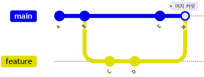
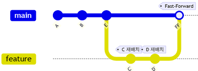
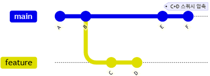

개발자와 관리자를 위한 실전 가이드
| 구분 | Git (분산형) | SVN (중앙집중형) |
|---|---|---|
| 저장소 | 로컬에 전체 역사(History) 보유 | 중앙 서버에 의존 |
| 오프라인 | 가능 (커밋, 브랜치 등) | 불가능 (서버 연결 필수) |
| 속도 | 로컬 처리로 매우 빠름 | 네트워크 속도에 의존 |
| 데이터 무결성 | SHA-1 체크섬으로 완벽 보장 | 상대적으로 취약 |
Git은 "내 컴퓨터에도 서버의 모든 데이터가 있다"는 점이 핵심입니다.
Git만 설치되어 있으면 인터넷 없이도 브랜치 생성, 이동, 머지를 모두 할 수 있습니다.
# 브랜치 만들기
git branch feature-login
# 브랜치 이동하기
git switch feature-login
# main으로 합치기
git switch main
git merge feature-login
🔌 이 모든 작업이 로컬(하드디스크)에서만 일어납니다.
GitHub에 push 하기 전까지는 외부에 공개되지 않습니다.
| 용도 | 설명 |
|---|---|
| 💾 백업 | 내 컴퓨터가 고장나도 원격 저장소에 코드가 안전하게 보관됩니다 |
| 🤝 협업 | 팀원들과 코드를 공유하고 함께 작업할 수 있습니다 |
| 🌐 공개 | 포트폴리오로 활용하거나 오픈소스로 공개할 수 있습니다 |
📚 "모든 작업 트리는 프로젝트 전체 히스토리의 완전한 사본을 가진 저장소를 포함하며, 어떤 저장소도 본질적으로 다른 저장소보다 더 중요하지 않다." — Git SCM
GitHub에 Push하기 전, 로컬에서의 기본 작업 흐름입니다.
항상 안정적인 상태로 유지
git switch -c feature
git commit -m "작업"
git merge feature
# 전체 흐름 요약
git switch -c feature-login # 1. 새 브랜치 생성 & 이동
# ... 코드 작성 ...
git add . && git commit -m "feat: 로그인 구현" # 2. 커밋
git switch main # 3. main으로 이동
git merge feature-login # 4. 머지
git branch -d feature-login # 5. 브랜치 삭제 (선택)📚 "Git에서 브랜치의 주요 용도 중 하나는 실험적이거나 기능별 작업을 격리한 다음, 메인 코드베이스에 다시 통합하는 것이다." — Git Core Tutorial
Git Bash 사용을 권장합니다.
# PowerShell (Winget)
winget install Git.Git
winget install GitHub.cliHomebrew를 이용한 설치가 가장 간편합니다.
# Terminal
brew install git
brew install gh* `gh`는 GitHub 공식 CLI 도구로, 이후 실습에서 사용됩니다.
설치 후 가장 먼저 해야 할 일입니다. (본인 정보 등록)
# 사용자 이름 설정
git config --global user.name "Your Name"
# 이메일 설정 (GitHub 가입 이메일 권장)
git config --global user.email "you@example.com"
# 줄바꿈 처리 설정 (Windows/Mac 협업 시 필수)
git config --global core.autocrlf true # Windows
git config --global core.autocrlf input # Macmkdir my-project
cd my-project
git init # 현재 폴더를 Git 저장소로 만듦Git을 제대로 이해하려면 3-State 모델을 알아야 합니다.
파일 수정 중
(Modified)
커밋 준비 완료
(Staged)
영구 저장됨
(Committed)
로그인 기능과 버그 수정을 동시에 작업했는데, 버그 수정만 먼저 커밋하고 싶다면?
# 버그 수정 파일만 스테이징
git add bugfix.js
git commit -m "fix: 로그인 버그 수정"
# 나중에 로그인 기능 커밋
git add login.js
git commit -m "feat: 로그인 기능 추가"작업 공간(Working) → 준비 영역(Staging) → 저장소(Repository)
# 1. 상태 확인 (가장 자주 사용!)
git status
# 2. 파일 담기 (Staging)
git add . # 모든 변경사항 담기
git add file.txt # 특정 파일만 담기
# 3. 버전 만들기 (Commit)
git commit -m "기능 추가: 로그인 페이지 구현"독립적인 작업 공간을 만듭니다. `checkout` 대신 최신 명령어 `switch`를 사용하세요.
| 동작 | Legacy (구 방식) | Modern (권장) |
|---|---|---|
| 브랜치 생성 & 이동 | git checkout -b feature |
git switch -c feature |
| 브랜치 이동 | git checkout main |
git switch main |
# 브랜치 목록 확인
git branch
# 브랜치 삭제
git branch -d feature-cleanup브랜치는 단순한 복사본이 아닌, 안전한 평행우주입니다.
내 브랜치에서 코드를 다 지워버려도,
Main(운영) 코드는 100% 안전합니다.
실수해도 괜찮은 나만의 실험실입니다.
"브랜치는 쓰고 버리는 것입니다. 아끼지 말고 만드세요."
실수했을 때 상황에 맞는 되돌리기 방법을 선택하세요.
| 명령어 | 용도 | 안전도 |
|---|---|---|
git stash |
작업 중인 변경사항 임시 저장 | 🟢 안전 |
git revert |
특정 커밋을 취소하는 새 커밋 생성 | 🟢 안전 (Push 후에도 사용 가능) |
git reset |
커밋 히스토리 자체를 변경 | 🔴 위험 (Push 전에만 사용) |
# Stash: 잠깐 다른 브랜치 가야 할 때
git stash # 임시 저장
git stash pop # 다시 꺼내기
# Revert: 이미 Push한 커밋 취소
git revert HEAD # 최근 커밋 취소 (새 커밋 생성)
# Reset: Push 전 커밋 수정
git reset --soft HEAD~1 # 커밋만 취소, 변경사항 유지
git reset --hard HEAD~1 # 커밋 + 변경사항 모두 삭제브랜치를 합치는 3가지 방법과 각각의 사용 시나리오입니다.
| 전략 | 특징 | 언제 사용? |
|---|---|---|
| Merge | 머지 커밋 생성, 히스토리 보존 | 팀 협업, 히스토리 추적 필요 시 |
| Rebase | 커밋 재배치, 깔끔한 히스토리 | 개인 브랜치, 선형 히스토리 선호 시 |
| Squash | 여러 커밋을 하나로 압축 | PR 머지, 기능 단위 커밋 정리 시 |
# Merge (기본)
git switch main && git merge feature
# Rebase (히스토리 재작성)
git switch feature && git rebase main
# Squash Merge (PR에서 주로 사용)
git merge --squash feature && git commit -m "feat: 로그인 기능"⚠️ 주의: 이미 Push한 브랜치는 Rebase 하지 마세요! 히스토리 충돌이 발생합니다.
세 가지 전략의 커밋 히스토리 변화를 비교해보세요.
Main Branch (A)──(B)──(E)────(M)─> ← 머지 커밋 │ │ └──(C)──(D)─┘ Feature Branch
✅ 머지 커밋(M) 생성
✅ 히스토리 완전 보존
Main Branch (선형 히스토리) ↓ 재배치됨 (A)──(B)──(E)──(C')──(D') │ └─Feature
✅ 선형 히스토리
⚠️ 커밋 해시 변경됨
Main Branch (깔끔한 이력) (A)──(B)──(E)──(F) ← C+D 압축 │ [Feature 증발] (C)──(D)──🗑️
✅ 깔끔한 단일 커밋
✅ 기능 단위 정리
💡 다이어그램을 클릭하면 이미지로 전환됩니다
같은 파일의 같은 부분을 서로 다르게 수정했을 때 발생합니다.
<<<<<<< HEAD
현재 브랜치의 코드 (내 코드)
=======
머지하려는 브랜치의 코드 (상대방 코드)
>>>>>>> feature-branch# 충돌 확인
git status # "both modified" 표시된 파일 확인
# 충돌 해결 후
git add .
git commit -m "resolve: 로그인 충돌 해결"
# 머지 취소하고 싶다면
git merge --abort프로젝트의 변경 이력을 확인하고 분석하는 필수 명령어입니다.
# 기본 로그 보기
git log
# 한 줄로 요약
git log --oneline
# 그래프 형태로 보기
git log --oneline --graph
# 최근 5개만
git log -5# 특정 파일 히스토리
git log -- src/auth.js
# 특정 작성자
git log --author="홍길동"
# 날짜 범위
git log --since="2024-01-01"
# 커밋 메시지 검색
git log --grep="fix"git config --global alias.lg "log --oneline --graph --all --decorate"
git lg # 이제 이렇게만 입력하면 됨!이미 존재하는 저장소에 참여하는 두 가지 방법입니다.
팀 프로젝트에 직접 참여할 때
# HTTPS 방식
git clone https://github.com/team/project.git
# SSH 방식 (권장)
git clone git@github.com:team/project.git
# 특정 브랜치만
git clone -b develop --single-branch URL✅ Push 권한 필요 (Collaborator)
오픈소스에 기여할 때
# 1. GitHub에서 Fork 버튼 클릭
# 2. 내 계정으로 복사된 저장소 clone
git clone git@github.com:me/project.git
# 3. 원본 저장소 연결
git remote add upstream URL
# 4. 원본과 동기화
git fetch upstream
git merge upstream/main✅ Push 권한 불필요 → PR로 기여
둘 다 원격 저장소의 변경사항을 가져오지만, 동작 방식이 다릅니다.
| 명령어 | 동작 | 안전성 | 사용 시점 |
|---|---|---|---|
git fetch |
다운로드만 | 🟢 안전 | 변경 확인 후 수동 병합 |
git pull |
다운로드 + 자동 병합 | 🟡 주의 | 빠른 동기화 필요 시 |
# 1. 원격 변경사항 다운로드
git fetch origin
# 2. 변경 내용 확인
git log HEAD..origin/main
# 3. 확인 후 병합
git merge origin/main# fetch + merge 한 번에
git pull origin main
# 충돌 가능성 있으면 rebase
git pull --rebase origin main💡 git pull = git fetch + git merge
로컬 저장소를 원격(GitHub)에 연결하고 협업하는 과정입니다.
# 원격 저장소 연결 (딱 한번만)
git remote add origin https://github.com/user/repo.git
# 코드 올리기 (Push)
git push -u origin main협업의 표준, 5단계 흐름을 상세히 알아봅니다.
Why? 메인 코드를 건드리지 않고 안전하게 작업하기 위해.
git switch -c feat-login
Why? 작업의 의미있는 단위를 기록(Save)하기 위해.
git commit -m "Add login"
Why? 내 컴퓨터의 코드를 GitHub(원격)에 공유하기 위해.
git push origin feat-login
Why? "내 코드를 검토해주고 합쳐주세요"라고 요청하는 것.
코드 리뷰와 자동 테스트(CI)가 여기서 일어납니다.
Why? 검증된 코드를 메인(Main) 브랜치에 정식으로 통합하는 것.
이제 모든 팀원이 변경 사항을 갖게 됩니다.
브라우저에서 직접 수행하는 핵심 작업입니다.
우측 상단 + → New repository
Settings → Collaborators → Add people
저장소 우측 상단의 세 버튼:
| 버튼 | 기능 | 용도 |
|---|---|---|
| ⭐ Star | 북마크 | 관심 프로젝트 저장 |
| 👁️ Watch | 알림 구독 | Issue, PR 알림 받기 |
| 🍴 Fork | 복사본 생성 | 내 계정에 복제 |
Fork vs Clone: Fork는 GitHub 서버에, Clone은 로컬에
HTTPS push 시 비밀번호 대신 사용
필수 권한: repo (저장소 읽기/쓰기)
# push 시 비밀번호 대신 PAT 입력
Password: ghp_xxxxxxxxxxxx⚠️ PAT는 생성 시 한 번만 표시됩니다!
터미널을 떠나지 않고 GitHub 기능을 100% 활용하세요.
# 1. 로그인 (대화형 인증 시작)
gh auth login
# Q. What account do you want to log into?
# -> GitHub.com
# Q. What is your preferred protocol for Git operations?
# -> HTTPS
# Q. How would you like to authenticate GitHub CLI?
# -> Login with a web browser (엔터 누르면 브라우저 열림!)
# -> 1234-5678 (터미널에 뜬 코드를 브라우저에 입력)# 2. 저장소 생성
gh repo create my-new-project --public --clone
# 3. PR(Pull Request) 생성
gh pr create --title "로그인 기능 구현" --body "상세 내용..."코드 리뷰와 협업의 핵심, PR을 제대로 활용하는 방법입니다.
closes #123)# Draft PR 생성 (아직 리뷰 준비 안됨)
gh pr create --draft --title "WIP: 로그인 기능"
# PR 목록 확인
gh pr list
# PR 체크아웃 (로컬에서 테스트)
gh pr checkout 42체계적인 작업 관리와 팀 협업을 위한 GitHub 기능입니다.
# Issue 생성
gh issue create --title "버그: 로그인 실패"
# Issue 목록
gh issue list
# Issue 닫기 (커밋에서)
git commit -m "fix: 로그인 버그 수정
closes #42"Kanban 스타일 프로젝트 보드
Issue/PR을 드래그해서 상태 변경!
bug, enhancement, documentation 등 라벨로 분류하고, Milestone으로 릴리즈 단위 관리
| Action | Role | Timing (Best Practice) |
|---|---|---|
| Commit | 개발자 | 하나의 논리적 기능이 완성되었을 때 (작게, 자주) |
| Push | 개발자 | 퇴근 전, 혹은 중요한 마일스톤 달성 시 |
| PR (Pull Request) | 개발자 | 기능 개발 완료 후, 동료의 리뷰가 필요할 때 |
| Merge | 관리자 | CI(테스트) 통과 및 리뷰 승인(Approve) 직후 |
코드가 푸시될 때마다 자동으로 빌드, 테스트, 배포를 수행합니다.
push: 메인 브랜치에 코드가 올라올 때pull_request: PR이 생성되거나 업데이트될 때 (검증용)schedule: 매일 밤(Nightly build) 등 특정 시간# .github/workflows/ci.yml 예시
name: Node.js CI
on: [push, pull_request]
jobs:
build:
runs-on: ubuntu-latest
steps:
- uses: actions/checkout@v3
- run: npm install
- run: npm testSecrets, Environments, Matrix 빌드 등 고급 기능을 활용하세요.
API 키, 토큰 등 민감 정보 안전 저장
env:
API_KEY: ${{ secrets.API_KEY }}
steps:
- run: curl -H "Auth: $API_KEY"배포 환경별 승인 워크플로
jobs:
deploy:
environment: production
# production 환경 승인 필요
steps:
- run: deploy.sh여러 환경 조합을 한번에 테스트 (아래 예: 3 Node버전 × 2 OS = 6개 병렬 실행)
strategy:
matrix:
node: [18, 20, 22] # 테스트할 Node.js 버전들
os: [ubuntu-latest, windows-latest] # 테스트할 OS들
runs-on: ${{ matrix.os }} # 각 OS에서 실행
steps:
- uses: actions/setup-node@v4
with:
node-version: ${{ matrix.node }} # 각 Node 버전으로 설정버전 태깅부터 자동 릴리즈까지, 체계적인 배포 관리입니다.
# 태그 생성
git tag -a v1.2.0 -m "Release v1.2.0: 로그인 기능 추가"
# 태그 푸시
git push origin v1.2.0
# 모든 태그 푸시
git push origin --tags
# GitHub CLI로 릴리즈 생성
gh release create v1.2.0 --title "v1.2.0" --notes "## 변경사항
- 로그인 기능 추가
- 버그 수정"💡 Tip: Actions에서 태그 푸시 시 자동 릴리즈 생성 가능!
협업을 안전하고 효율적으로 만들기 위한 강력한 도구들입니다.
특정 파일이나 폴더의 책임자를 지정합니다. PR 시 자동으로 리뷰어가 지정됩니다.
# CODEOWNERS 파일 (.github/CODEOWNERS)
/libs/ @myorg/frontend-team
/db/ @myorg/db-adminSettings -> Branches에서 설정. 메인 브랜치를 보호합니다.
GitHub Team Plan에서 조직과 팀을 체계적으로 관리하는 방법입니다.
| 권한 | Read | Write | Admin |
|---|---|---|---|
| 코드 보기 | ✅ | ✅ | ✅ |
| Push/PR | ❌ | ✅ | ✅ |
| 설정 변경 | ❌ | ❌ | ✅ |
Settings → Branches → Add rule에서 설정하는 핵심 보호 규칙입니다.
| 규칙 | 설명 | 권장 |
|---|---|---|
| Require PR | 직접 Push 금지, 반드시 PR 필요 | 🟢 필수 |
| Required reviewers | 최소 N명의 승인 필요 | 🟢 1~2명 |
| Dismiss stale reviews | 새 커밋 시 이전 승인 무효화 | 🟢 권장 |
| Require status checks | CI 통과 필수 | 🟢 필수 |
| Require CODEOWNERS | 코드 소유자 승인 필수 | 🟡 선택 |
# CODEOWNERS 예시 (.github/CODEOWNERS)
# 전체 저장소
* @org/core-team
# 특정 경로
/frontend/ @org/frontend-team
/backend/ @org/backend-team
*.sql @db-adminTeam Plan에서 제공하는 보안 도구로 코드와 의존성을 안전하게 관리하세요.
취약한 의존성 자동 감지 & PR 생성
코드에 노출된 비밀키 자동 감지
# .github/dependabot.yml
version: 2
updates:
- package-ecosystem: "npm"
directory: "/"
schedule:
interval: "weekly"
open-pull-requests-limit: 10Security → Code scanning에서 CodeQL 분석 활성화 가능
Team Plan 관리자가 정기적으로 확인해야 할 보안 항목입니다.
💡 Settings → Security → Security log에서 전체 감사 로그 확인 가능
이제 여러분은 Git과 GitHub 전문가입니다.
Happy Coding!